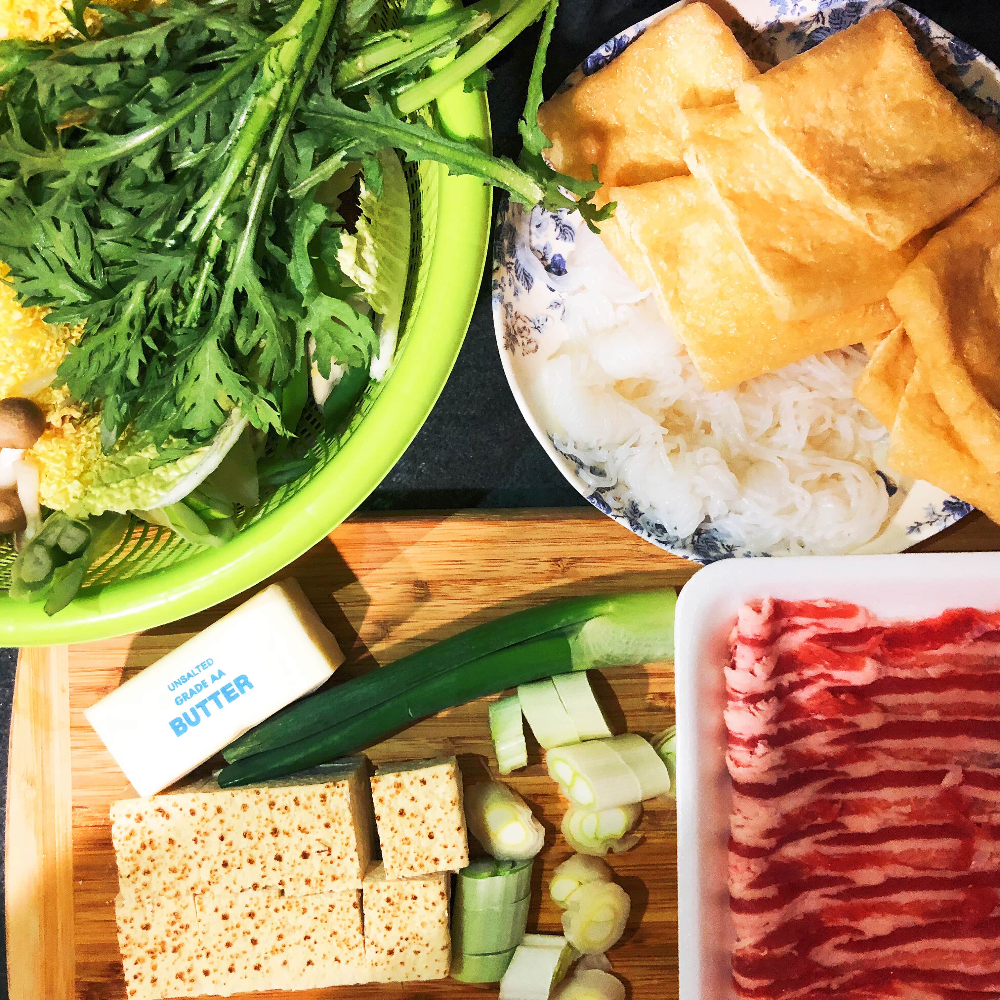
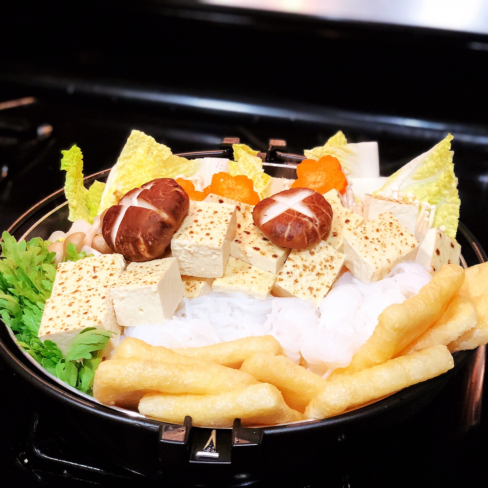
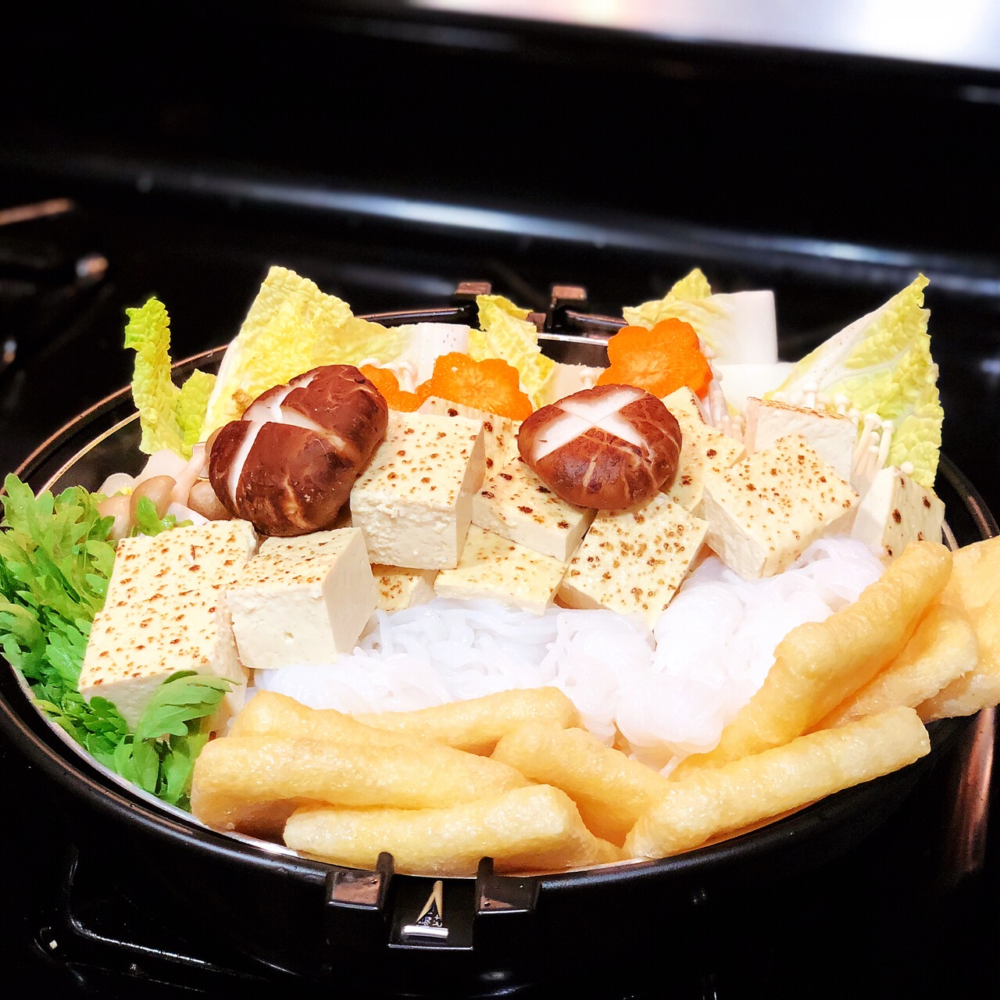
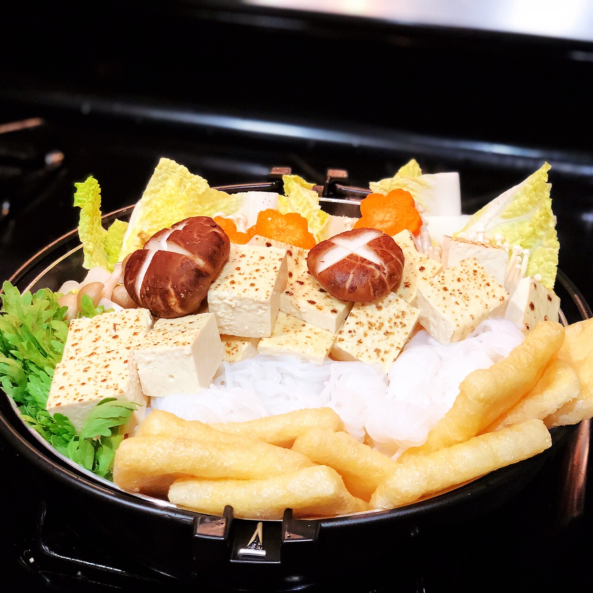

Put all the seasonings in the pan and let them melt overheat (don't let them boil)
Prepare the pot, fire the oil
Stir fry the scallions until the surface turns golden yellow
Add the beef slices 1/3 Fried
Add all the ingredients and sauce and cook until done
Add the remaining slices of beef at the end

<
>

<
>
Dongpo Pork
Ingredients
Pork belly 800 grams
star anise 15 grams
piece of bay leaf
50 grams of green onion
30 grams of ginger
20 grams of sugar
salt
soy sauce 25 grams
30 grams of rice wine
25 grams of rock sugar
5 grams of peanut oil
Directions
first cut the pork belly into 2.5cm square pieces, with cold water under the pot, boil the meat pieces after 5 minutes to fish out, control water reserve
Wok heat into a little oil, stir-fry star anise, pour in fine sugar stir-fry sugar color until slightly yellow can
Sugar thoroughly melt, fry to a little color, under the meat pieces stir-fry, the meat pieces stir-fry to dry water color transparent, yellow surface, and began to oil cooking rice wine
Add soy sauce stir fry, soy sauce evenly adsorbed on the meat
The meat Fried, into the pot into the boiling water, into the spring onion, ginger, geranium
Add rock sugar, cover the pot and simmer for 30-40 minutes
After the meat stewed, pick up the onion, ginger, star anise, geranium do not, then, put a little salt, with a high heat juice
Oil Spill Noodle
Ingredients
flour 100 grams
warm soy milk
7-8 leek
3 spinach
pork belly a small piece
1/4 onion
radish pickles 10 grams
half green onions
garlic 8 cloves
soy sauce 1 tablespoon
vinegar 1 tablespoon
sesame oil a few drops
salt 1 tablespoon
Directions
warm soybean milk and noodles, also can use lukewarm water, the morning dozen soybean milk drink not to drop just used the soft and hard moderate good, after kneading smooth set aside for 20 minutes
In the process of processing other materials, pork belly cut, onion cut into small pieces, pan into the oil, onion chopped saute, add pork belly stir fry
Add a little soy sauce and radish and pickles until the meat changes color. Continue to stir-fry for 1 minute
Roll the dough into cakes. The thickness of the cakes can be changed according to your taste
After the noodles are cooked, use cold water. Keep the water dry and place it in the noodle bowl
Blanch the spinach and leek and remove the dried water and place on top of the noodles.
pot into the oil, the amount of the same as usual, oil hot after the spill on the surface, delicious oil spill on the surface is OK

 
